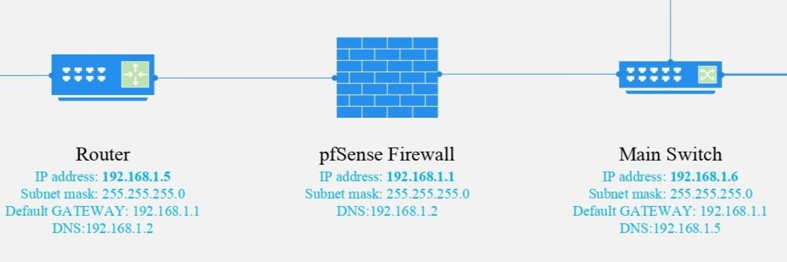

Inginer software pasionat cu experiență în dezvoltare full-stack, sisteme IoT și aplicații mobile.
Aprilie 2025 - Iunie 2025
Developer Computer Vision si Quality Controller - Sistem de Sortare Deșeuri
NHL Stenden, MDT-project Emmen
Responsabilități cheie:
- Dezvoltare API FastAPI pentru procesare imagini cu autentificare secure
- Implementare model YOLO custom
- Mapping inteligent al claselor la categorii de reciclare conform standardelor olandeze
- Generare alternative de clasificare cu probabilități pentru rezultate incerte
- Monitorizare și logging detaliat pentru depanare
Stack tehnic:
Python
FastAPI
YOLOv8
OpenCV
UVicorn
Dotenv
MongoDB
Express
React
NodeJS
Noiembrie 2024 - Februarie 2025

Team Lead Linux Server și Quality Controller – Infrastructură Scoala Gimnaziala Morgenstar
NHL Stenden - client fictiv "Morgenstar"
Responsabilități cheie:
- Coordonarea echipei în implementarea infrastructurii pentru o aplicație web complet
funcțională
- Configurare și administrare server Ubuntu cu Apache, MySQL și
PHP
- Configurare rețea și firewall, documentare topologie rețea în Microsoft Visio
- Testare funcțională și tehnică a infrastructurii înainte de predare
- Asigurarea respectării cerințelor funcționale și a standardelor de calitate
Stack tehnic:
Linux (Ubuntu)
Apache
MySQL
PHP
Visio
VirtualBox
Septembrie 2024 – Noiembrie 2024
Lead Developer și Quality Controller – Website de Promovare
NHL Stenden – client fictiv "Circle Solutions"
Responsabilități cheie:
- Dezvoltare completă a unui website de promovare folosind doar PHP, HTML și
CSS, fără framework-uri sau librării externe
- Implementare structură modulară și formulare cu validare de bază
- Testare și corectare erori de afișare, compatibilitate și funcționalitate
- Asigurarea consistenței vizuale și respectarea cerințelor clientului fictiv
Stack tehnic:
PHP
HTML
CSS
Mai 2023 – Iunie 2024
Flutter Developer – Olint COM SRL
Aplicații enterprise pentru managementul afacerii
Responsabilități cheie:
- Dezvoltare interfețe și funcționalități în Flutter pentru aplicații
interne de tip enterprise
- Implementare sistem de pontaj automatizat folosind Bluetooth Low Energy
(BLE)
- Creare module pentru gestiunea stocurilor, concediilor și arhivarea documentelor
- Optimizare performanță aplicație și gestionare local storage pentru date critice
- Testare și menținere aplicații multi-platformă (Android și iOS)
Stack tehnic:
Flutter
Dart
BLE
SQLite
Septembrie 2023 - prezent
Cercetare in domeniul sistemelor hidroponice inteligente si a metodelor de a economisi apa
Fondator, inginer software si hardware in "Echpa Verde".
Realizari:
- Locul 1 la Concursul National de Referate si Comunicari Stiintifice „Ștefan Procopiu” ,
editia 2024
- Locul 1 la Competitia Nationala "Samsung: Solve for Tomorrow", editia 2024
- Locul 2 la Concursul Național de Știință și Inginerie RoSEF, editia 2023
Stack tehnic:
Arduino
C++
Contact
Disponibil pentru proiecte și colaborări. Nu ezita să mă contactezi!
{kind=link}
{kind=link}
{kind=link}